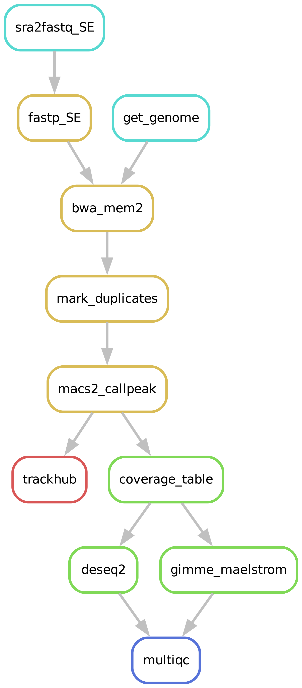

ChIP-seq¶
Running a ChIP-seq analysis has never been easier!
Pipeline steps¶

Downloading of sample(s)¶
Depending on whether the samples you start seq2science with is your own data, public data, or a mix, the pipeline might start with downloading samples. Take a look at the downloading_fastq workflow for extensive documentation about downloading of public samples.
Downloading and indexing of assembly(s)¶
Depending on whether the assembly and its index you align your samples against already exist seq2science will start with downloading of the assembly through genomepy.
Read trimming¶
The pipeline starts by trimming the reads with trim galore!. Trim galore automatically first trims the low quality 3’ ends of reads, and removes short reads. After the quality trimming trim galore automatically detects which adapter was used, and trims it. The parameters of trim galore! for the pipeline can be set in the configuration by variable trim_galore.
Alignment¶
After trimming the reads are aligned against an assembly. Currently we support bowtie2, bwa-mem, hisat2 and star as aligners. Choosing which aligner is as easy as setting the aligner variable in the config.yaml, for example: aligner: bwa. Sensible defaults have been set for every aligner, but can be overwritten for either (or both) the indexing and alignment by specifying them in the config.yaml.
The pipeline will check if the assembly you specified is present in the genome_dir, and otherwise will download it for you through genomepy. All these aligners require an index to be formed first for each assembly, but don’t worry, the pipeline does this for you.
Bam sieving¶
After aligning the bam you can choose to remove unmapped reads, low quality mappings, duplicates, and multimappers.
Peak calling¶
Currently we support two peak callers for the ChIP-seq workflow, MACS2 and genrich.
MACS2¶
MACS2 is the successor of MACS, created by taoliu (also one of the co-authors of hmmratac). MACS2 generates a ‘pileup’ of all the reads. You can imagine this pileup as laying all reads on top of each other on the genome, and counting how high your pile gets for each basepair. MACS2 then models ‘background’ values, based on the total length of all your reads and the genome length, to a Poisson distribution and decides whether your experimental pileup is significant compared to the poisson distribution. MACS2 is one of the, if not the, most used peak caller.
For the calculation of peaks MACS2 requires that an “effective” genome size is being passed as one of its arguments. For the more common assemblies (e.g. mm10 and human) these numbers can be found online. However we found googling these numbers quite the hassle, and for lesser studied species these numbers can’t be found online. Therefore the pipeline automatically estimates the effective genome size, we calculate this as the number of unique kmers of the average read length.
Broad peaks¶
The MACS2 peak caller also supports broad peak calling, and so does seq2science. To let MACS2 call broad peaks you have to add --broad to the macs2 command, e.g.:
peak_caller:
macs2:
--keep-dup 1 --broad
Genrich¶
Genrich is a spiritual successor of MACS2, created by John M. Gaspar. Just like MACS2 is generates a ‘pileup’. However the author of genrich realized that the distribution of pileup never follows a poisson distribution. Genrich then uses a log-normal distribution to model the background.
Quality report¶
It is always a good idea to check the quality of your samples. Along the way different quality control steps are taken, and are outputted in a single multiqc report in the qc folder. Make sure to always check the report, and take a look at interpreting the multiqc report!
Count table¶
A useful result the pipeline outputs is the count table, located at {result_dir}/count_table/{peak_caller}/. For each narrowpeak (across all samples) its summit is taken, and all other summits within range peak_windowsize (default 100) are taken together, and the summit with the highest q-value is taken as the “true” peak. The remaining peaks are extended by slop on each side and for each sample the number of reads are counted under this peak. This file is stored as {assembly}_raw.tsv, and looks something like this:
sample1 sample2
chr1:5649-5849 75.00000 0.00000
chr1:7399-7599 47.00000 1.00000
Note: since peaks are combined on their summit, NO count table is outputted for broad peaks.
Seq2science currently supports four different normalisation methods: quantile normalisation, TMM, RLE, and upperquartile normalisation, and does count-per-million (counts under peaks) normalisation on each before normalisation.
**Quantile normalization** is a type of normalization that makes the distribution between samples identical. This means that the actual count distribution within a sample changes. This normalisation is especially powerful when comparing results from different labs/experiments/experimental methods.
TMM is the weighted trimmed mean of M-values proposed by Robinson and Oshlack (2010).
RLE is the scaling factor method proposed by Anders and Huber (2010). DEseq2’s standard normalisation is based on this.
Upper quartile is the upper-quartile normalization method of Bullard et al (2010).
After these normalisations the counts are log normalised, and the base can be set with logbase and defaults to 2. As a final step the count tables are mean-centered. This final count table can be used for tools like gimme maelstrom to scan for enriched transcription factor motifs. Note that this table contains all peaks, and no selection on differential peaks has been made. This is something that might be supported in the future, but for now you have to do this yourself.
Trackhub¶
A UCSC compatible trackhub can be generated for this workflow. See the trackhub page for more information!
Filling out the samples.tsv¶
Before running a workflow you will have to specify which samples you want to run the workflow on. Each workflow starts with a samples.tsv as an example, and you should adapt it to your specific needs. As an example, the samples.tsv could look something like this:
sample assembly replicate descriptive_name control
GSM123 GRCh38 heart_1 heart_merged GSM234
GSM321 GRCh38 heart_1 heart_merged GSM234
GSMabc GRCh38 heart_2 heart_not_merged GSM234
GSMxzy danRer11 stage_8 stage_8 GSM234
GSM890 danRer11 stage_9 stage_9 GSM234
Sample column¶
This column is necessary for all workflows, not just the ChIP-seq workflow. If you use the pipeline on public data this should be the name of the accession (e.g. GSM2837484). If you use the pipeline on local data this should be the basename of the file without the extension(s). For instance, /home/user/myfastqs/sample1.fastq.gz would be sample1 (for single-ended data). For paired-ended data /home/user/myfastqs/sample2_R1.fastq.gz and /home/user/myfastqs/sample2_R2.fastq.gz would be sample2.
Assembly column¶
This column is necessary for all workflows, except the downloading samples workflow. Here you simply add the name of the assembly you want your samples aligned against and the workflow will download it for you.
Control column¶
In the control column you can (optionally) add the “sample name” of the input control. It is generally a bad idea to add the input control as a sample in the sample since generally peak callers fail on these samples.
Descriptive_name column¶
The descriptivename column is used for the trackhub and multiqc report. In the trackhub your tracks will be called after the descriptive name, and in the multiqc report there will be a button to rename your samples after this column. The descriptive name can not contain ‘-‘ characters, but underscores ‘’ are allowed.
Technical replicates¶
Technical replicates, or any fastq file you may wish to merge, are set using the replicate column in the samples.tsv file. All samples with the same name in the replicate column will be concatenated into one file with the replicate name.
Example samples.tsv utilizing replicate merging:
sample assembly replicate
GSM123 GRCh38 heart
GSMabc GRCh38 heart
GSMxzy danRer11 stage8
GSM890 danRer11
Using this file in the alignment workflow will output heart.bam, stage8.bam and GSM890.bam. The MultiQC will inform you of the trimming steps performed on all samples, and subsequent information of the ‘replicate’ files (of which only heart is merged).
Note: If you are working with multiple assemblies in one workflow, replicate names have to be unique between assemblies (you will receive a warning if names overlap).
Replicate merging is turned on by default. It can be turned off by setting technical_replicates in the config.yaml to keep.
Biological replicates¶
During ChIP-seq workflows, peak calling can be performed per biological condition, depending on your configuration setting. Biological conditions are determined by the condition column in the samples.tsv file. How these samples are handled is specified by configuration variable biological_replicates.
If you merge technical replicates and combine biological replicates, the technical replicates are merged first.
Keep¶
The default setting. All samples/merged replicates are analyzed individually. The condition column is ignored.
Irreproducible Discovery Rate (IDR)¶
One of the more common methods to combine biological replicates is by the irreproducible discovery rate (idr). Shortly; idr sorts all the peaks of two replicates separately on their significance. Since true peaks should be very significant for both replicates these peaks will be one of the highest sorted peaks. As peaks get less and less true (and thus their significance) their ordering also becomes more random between the samples. The idr method then only keeps the peak that overlap nonrandomly between the samples. The idr method only works for two replicates, so can not be used when you have more than 2 (n == 2).
Fisher’s method¶
Fisher’s method simply is a method to ‘combine’ multiple p-values. This method is built-in for genrich and macs2, and allows any number of replicates (n >= 2). However a ‘disadvantage’ of this method is that it assumes the p-values a method generates are actual p-values (and not a general indication of significance). MACS2 is slightly notorious for that its p-values are not true p-values. Genrich claims by fitting on a log-normal distribution that their p-values are true. Even though fisher’s method might not be ideal, it’s the only option you have (we provide) within this pipeline for more than 2 replicates.
Colors column¶
If you are visualizing your data on the UCSC trackhub you can optionally specify the colors of each main track. For ATAC- and ChIP-seq, each biological replicate is a main track. To do so, you can add the color by name (google “matplotlib colors” for the options), or RGB values, in the “colors” column. Empty fields are considered black.
Final notes¶
Make sure that the samples.tsv is a tab separated values file when running the pipeline.
Feel free to delete or add columns to your liking.
Filling out the config.yaml¶
Every workflow has many configurable options, and can be set in the config.yaml file. In each config.yaml we highlighted a couple options that we think are relevant for that specific workflow, and set (we think) reasonable default values.
When a workflow starts it prints the complete configuration, and (almost) all these values can be added in the config.yaml and changed to your liking. You can see the complete set of configurable options in the extensive docs.
Best practices¶
Irreproducible Discovery Rate¶
For idr to work properly, it needs a large portion of peaks that are actually not true peaks. Therefore we recommend to call peaks ‘loosely’. One way of doing this is setting the peak threshold q-value low for macs2 in the configuration.